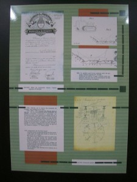

La semana pasada estuvimos de vacaciones en Villa Gesell Ceci, Meli, Barby y yo. Fuimos en cole (largo) y paramos en el hotel CityMar (nos gustó que estaba a 1.5 cuadras de la playa, la comida y la pileta). Mientras volvía, medio dormido y contento, se me había ocurrido la idea de escribir un relato detallado de todo el viaje. Ya no se si voy a hacerlo, pero hay algunas cosas que quiero comentar:
Pinar del Norte
Uno de los mejores lugares para visitar, no-playa, es el Pinar del Norte: al norte de la ciudad, junto al mar, se levanta una enorme arbolera de, en su mayoría, pinos. En el interior está:
- la sede del Museo y Archivo Histórico Municipal de Villa Gesell (en el edificio de lo que fue la primer casa de su fundador).
- otros museos, como el de los Pioneros, en honor a los primeros habitantes y otros edificios con historia.
- el vivero municipal.
- un viejo tinglado convertido en cafetería.
- caminos para recorrer y sombra para descansar (muy lindo para pasar la tarde tomando mates o jugando a las cartas).
- un centro cultural dónde se puede encontrar a un maestro tocando el piano en vivo (en el edificio de la segunda casa del fundador).
Por el simbólico valor de 3 pesos[0] se puede realizar una visita guiada a los distintos edificios que se encuetran en el lugar. Si van de vacaciones a Gesell, no dejen de realizar esta visita por que es de verdad muy buena. La guía le ponía tanta pasión a su trabajo que la historia realmente te atrabapa.
Don Carlos Idaho Gesell
El fundador de Villa Gesell se llamó Carlos Idaho Gesell y nació en Buenos Aires en 1891, aunque sus padres eran alemanes. Su padre, Silvio Gesell, quién luego fuera conocido por sus trabajos en economía, era un comerciante que vino desde Europa, primero vendiendo herramientas para odontólogos y más tarde elementos para bebés; Casa Gesell fue el nombre de la empresa familiar en la que Carlos también trabajo.
El hijo heredó de su padre el hobby por los inventos. Carlos Gesell registró más de 200 patentes en Argentina y en Estados Unidos, dónde pasó 10 años estudiando en las grandes bibliotecas; pasaba allí horas, desde que abrían hasta que cerraban.

De regreso en Argentina, se dedicaba al diseño y rediseño de productos en Casa Gesell, como cochecitos todo terreno para bebes y muebles. En sus vacaciones de 1931, en Mar del Plata, conoce a Hector Manuel Guerrero, dueño de campos en la zona de General Maradiaga, quien le informa de un terreno lleno de dunas que se vende. Llegar al lugar, requiere un largo viaje en tren hasta la Estación Juancho, atravesar campos haciendo uso del permiso de servidumbre, y atravezar extensiones de arena en sulky. Luego de hacer algunas pruebas y encontrar que el agua es potable, don Carlos, como se lo empieza a llamar a partir de cierta edad, decide comprar las tierras para sembrar pinos que sirvan para suministrar madera a su empresa.
Muchos miembros de su familia le recriminan haber gastado tanto dinero en un montón de arena, se termina separando y volviendo a casar para en ese mismo año construir la primer casa en su nueva propiedad. Algo particular del lugar es la presencia de dunas, masas vivas de arena que por acción del viento pueden cambiar de lugar de un día para el otro. Usando su ingenio, diseñó su casa con 4 puertas, una por cada punto cardinal y así poder salir si durante la noche se acumulaba arena en alguna de las entradas. Al principio viajaba los fines de semana y la casa servía de veraneo para el resto de la familia.
Pasó 10 años intentando sembrar pinos y otras especies que conseguía en viveros de Buenos Aires y otros lugares del mundo; incluso invitó a un ingeniero agrónomo alemán a instalarse a trabajar junto a él. Luego de dos años, se fue enojado, diciéndole a don Carlos que nada crecería en ese lugar. Finalmente, a fuerza de perseverancia e ingenio logro su objetivo.

Como una idea para obtener recursos para continuar su labor, se le ocurre construir una casa en la que personas de Capital Federal puedan pasar sus vacaciones, la llama La Golondria, por el caracter pasajeron que tendrían sus visitantes. Rápidamente tiene éxito y el boca a boca hace que cada año sean más las personas que llegan a pasar sus vacaciones en aquel lugar, algunos les compran tierras a Don Carlos y construyen sus propias casas. Don Carlos, hasta su muerte, ayuda en la construcción de la ciudad: siendo benefactor de instituciones, estableciendo caminos y construyéndolos, sembrando más árboles; y así un pinar productor de madera, terminó convertido en uno de los balneareos más visitados de Argentina.
Libros
Como sabrás, si seguís este blog, me gustan bastante los libros: comprar, oler, descubrir, recomendar, leer. En Villa Gesell hay muchas librerías, sobre todo en el centro. De usados hay dos o tres sobre la avenida 3[1] pero no encontré nada de valor allí. De todas las que visité, la que realmente es un hayazgo digno de compartir es una que se encuentra en la parte baja del Paseo España, casi al fondo (el Paseo España es una calle peatonal que corta la avenida 3): venden libros muy baratos (casi un 50% menos que en las otras librerías). Según la vendedora, los precios se deben a que son ediciones económicas y a que los impuestos son distintos por estar en una feria. No dejen de visitarlo; yo compré 3 libros por 70 $ que en una librería tradicional me hubiesen costado 130 $.
Otro hallazgo literario lo hice en Pinamar. No fuimos en excursión o algo por el estilo (no se cuando te pueden cobrar); por 11 pesos una persona puede ir y volver en colectivo (pasan cada media hora) y pasear por le centro y la playa. No me gustó mucho la ciudad, y es cara (una bochita de helado por 13 $ no es negocio). Pero en una especie de peatonal en el centro hay una casa de usados con muy buen material. Allí compre En la arena estelar, el siguiente libro de libro de Isaac Asimov en mi lista de libros a leer para completar La Saga de la fundación.

Seguir navegando
Cree un album en mi galería con fotos del Pinar del Norte y los museos y otro con fotos de las playas.
Empecé la entrada en Wikipedia en Español para Carlos Idaho Gesell.
[0] De verdad, es muy poco para pagar una recorrida guiada de tan buena calidad y los lugares a los que se tiene acceso. El dinero se utiliza par el mantenimiento del lugar, así que si visitás el parque y querés hacer una contribución mayor, podés comprar alguna de las publicaciones que tiene el museo.
[1] En Villa Gesell las calles paralelas a la costa se numeran: 1, 2, 3, 4... y las perpendiculares con números mayores a 100.


{kind=link}
{kind=link}
{kind=link}
{kind=link}
{kind=link}
{kind=link}
{kind=link}
{kind=link}
{kind=link}
{kind=link}